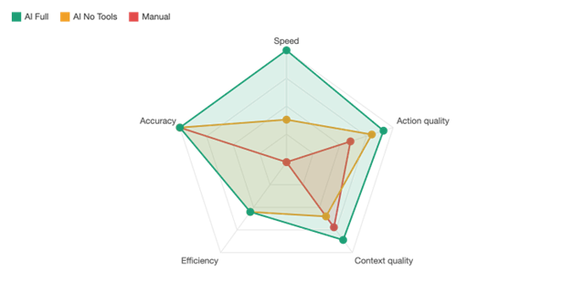

SOC Automation Pipeline / Results
Compare triage speed and investigation context.
Explore what changes between manual review, model-only analysis and enrichment-assisted triage. Compare time, quality and analyst steps together, then filter by scenario to inspect the recorded runs behind each average.
Choose the comparison
Overall mode comparison
Scenario comparison
All recorded runs
Recorded duration and clock difference are separate columns. Highlighted rows have a mismatch; the recorded data is preserved.
Recorded radar overview

Read the results in context
Timing and data reconciliation
Use the CSV's recorded triage_time_s values for the aggregate charts. Four runs differ from end minus start. The integrated analyst-step mean is 27/7 = 3.857…, displayed as 3.9. The earlier prose's 3.6 is not substituted into these calculations.
Coverage and scoring
The manual, model-only and integrated groups contain five, three and seven runs. Account changes and PowerShell have no model-only rows. Quality scores came from one evaluator; these comparisons describe the available controlled records.